User Manual
Alpha Premier Property
Branding Studio
Watermark, crop, and export listing photos and videos for Windows
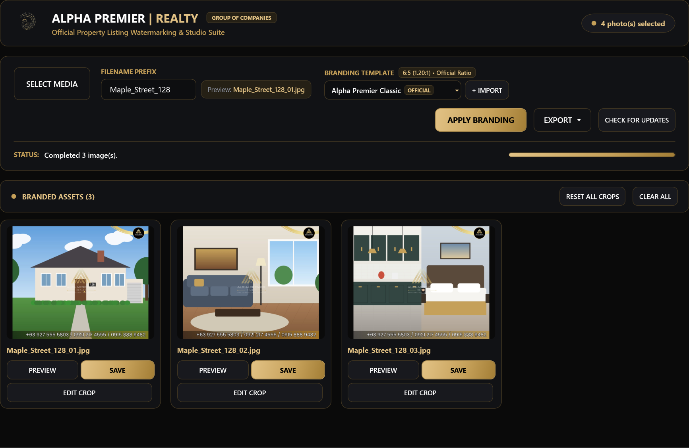

This manual explains how to install and use Alpha Premier Property Branding Studio (called “Branding Studio” in this manual). It is written for listing agents, marketing staff, and photographers who prepare property media for Alpha Premier Realty listings. No technical background is needed.
The chapters follow the order of a normal working session. If you only want to brand a batch of photos quickly, read Chapter 3, Quick start, which takes about five minutes.
| Convention | Meaning |
|---|---|
| APPLY BRANDING | A button, menu item, or label exactly as it appears on screen. |
| Ctrl + O | A keyboard shortcut. Hold the first key and press the second. |
| 1 | A numbered marker on a screenshot. The table under each figure explains what each number points to. |
%LOCALAPPDATA% | A file path, file name, or text you type. |
Gives extra information that helps you understand a feature.
Suggests a faster or better way to do something.
Warns you about something that can lose work or produce an unexpected result.
Screenshots in this manual use sample illustrations in place of real listing photos. Your screen will show your own media. Screenshots were taken at 100% display scaling; at higher scaling, some button rows wrap onto a second line.
Branding Studio applies the official Alpha Premier Realty frame (logo, gold accents, and contact numbers) to property photos and video clips. Every output has the same size and look, ready to post on listing sites and social media.
Maple_Street_128_01.jpg.Branding Studio converts each photo to a 1200 × 1000 pixel image and adds the frame on top. You do not need to resize your photos first.
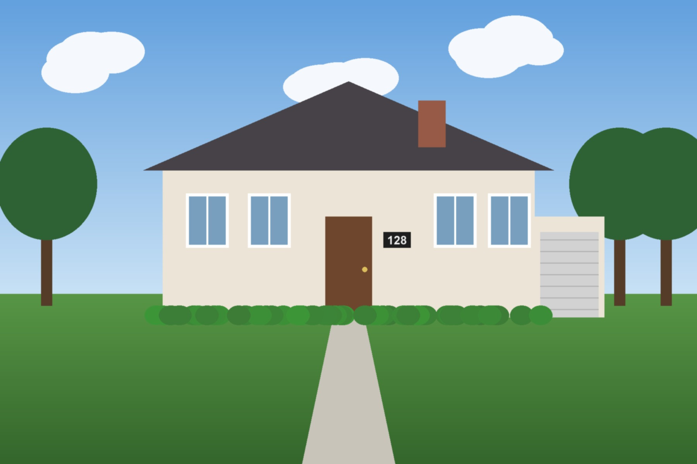
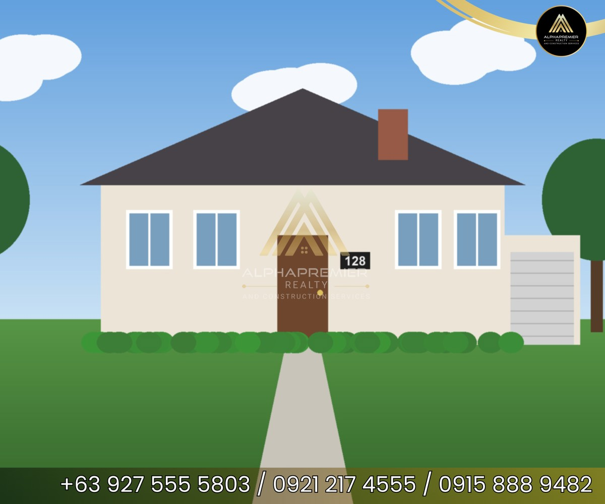
Figure 1-1. An original exterior photo (left) and the branded result (right).
All processing happens on your PC. Branding Studio does not upload your photos or videos anywhere. The only internet connection it makes is to check for software updates (Chapter 13).
| Item | Requirement |
|---|---|
| Operating system | Windows 10 (version 1809 or later) or Windows 11, 64-bit |
| Administrator rights | Not required. The app installs for your Windows user account only. |
| Extra software | None. Everything the app needs is included in the installer. |
| Internet | Only needed to download the installer and to check for updates. |
| Display | Works at 100%, 125%, 150%, 175%, and 200% Windows display scaling. Smallest window size: 840 × 480. |
Alpha.Branding.Setup.exe from the official release page: github.com/Deign86/Alpha_Branding/releases/latest. Your IT team may also give you the file directly.Alpha.Branding.Setup.exe.The app is installed to %LOCALAPPDATA%\Alpha Premier Realty\Branding Studio and a Start menu shortcut is created.
Alpha.Branding-v2.4.0.zip file from the same release page.Alpha.Branding.exe.Use the portable version if you cannot install software on your PC, or to run the app from a USB drive.
Uninstalling removes the app. Files you have already exported are not affected.
The repository includes Install.ps1 for unattended deployment through tools such as Action1 RMM or Microsoft Intune. It supports -DownloadUrl, -AllUsers, -CreateDesktopShortcut, and -Uninstall. To turn off update checks on a PC, set the machine environment variable ALPHA_BRANDING_DISABLE_AUTO_UPDATE to 1. See the project README for full details.
Follow these steps to brand a set of listing photos and save them as a ZIP file. It takes about five minutes.
Maple_Street_128. The Preview box shows the first file name.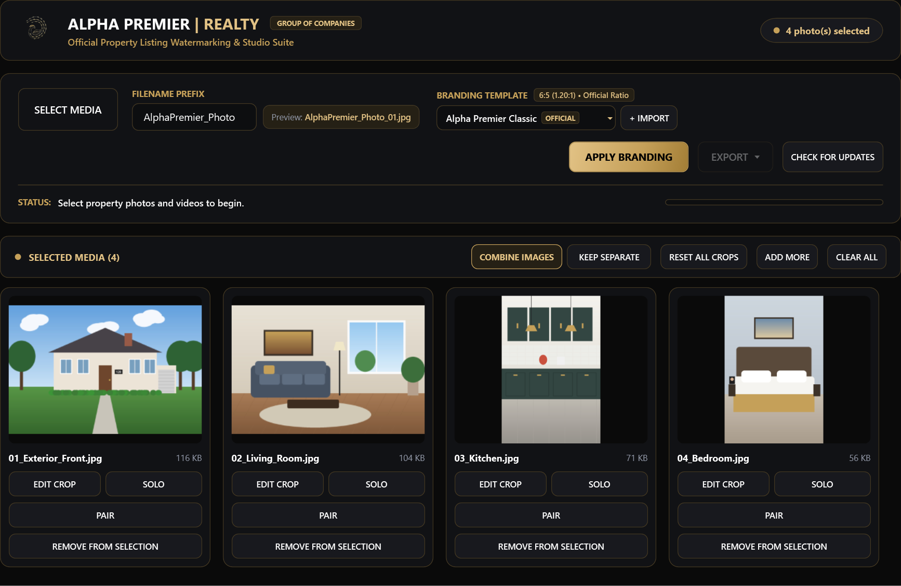
2 3 4 6By default, portrait (tall) photos are combined in pairs. Four photos with two portraits give three results: two single photos and one side-by-side pair. See Chapter 6 to change this.
The main window has three areas: the header at the top, the control panel in the middle, and the workspace below. The workspace shows a welcome screen, your staged media, or your branded results, depending on where you are in the session.
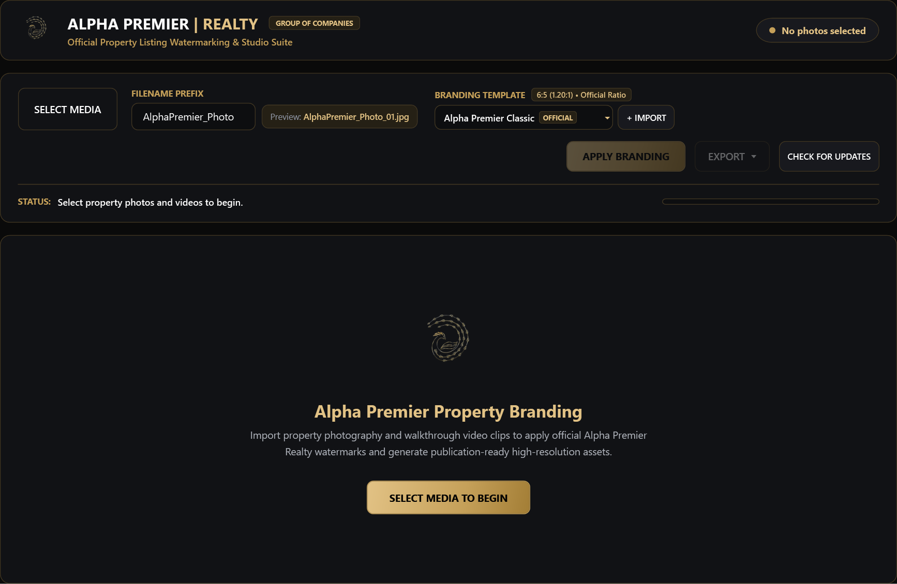
1 2 3 4 5 6 7 8 9 10 11 12| # | Item | What it does |
|---|---|---|
| 1 | Selection counter | Shows how many photos and videos are in the current batch. |
| 2 | SELECT MEDIA | Opens a file window so you can choose photos and videos. Starts a new batch. |
| 3 | FILENAME PREFIX | The start of every output file name. See Chapter 8. |
| 4 | Preview | Shows what the first output file will be called. |
| 5 | BRANDING TEMPLATE | Selects which frame is applied. The badge above it shows the frame’s shape. |
| 6 | + IMPORT / DELETE | Adds a new template. DELETE appears only when a custom template is selected. |
| 7 | APPLY BRANDING | Processes every staged item. Available once media is selected. |
| 8 | EXPORT | Saves all results as a ZIP file or as separate files. Available after branding. |
| 9 | CHECK FOR UPDATES | Checks for a newer version of the app. See Chapter 13. |
| 10 | STATUS | Describes what the app is doing or what just happened. Read this first if something seems wrong. |
| 11 | Progress bar | Fills up while files are loaded, branded, or exported. |
| 12 | Welcome area | Select SELECT MEDIA TO BEGIN, or drop files here. |
Buttons appear faded when they cannot be used yet. For example, EXPORT stays faded until you have branded results, and most buttons are paused while the progress bar is running.
| Type | File extensions | Output |
|---|---|---|
| Photos | .jpg .jpeg .jfif .png .bmp .webp .heic .heif | JPG, 1200 × 1000 pixels |
| Videos | .mp4 .mov .wmv .avi .m4v .mkv .webm | MP4, 1200 × 1000 pixels |
Files of other types are ignored. HEIC and HEIF photos (common on iPhones) are converted automatically.
Use any of these methods:
After you add files, each one appears as a card. The bar above the cards contains actions for the whole batch.
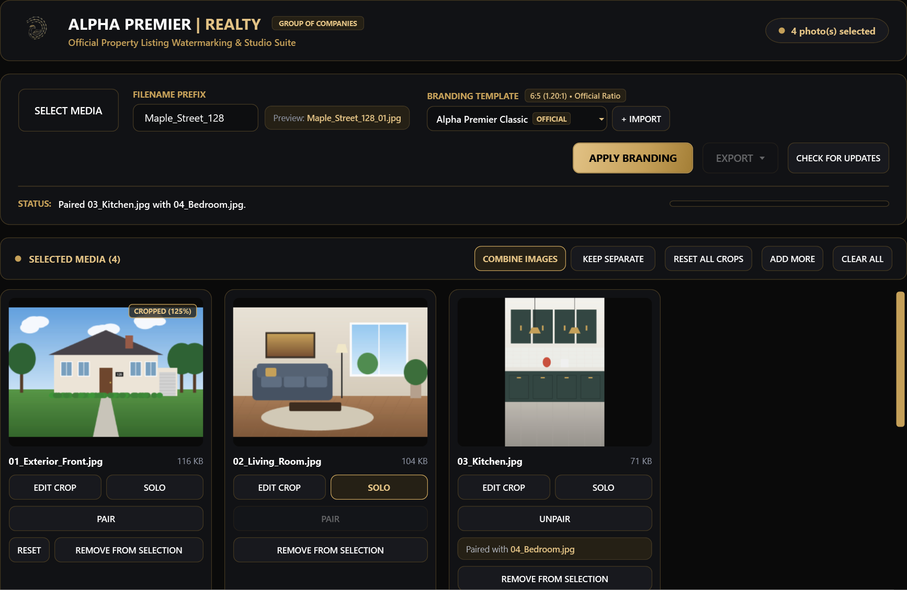
1 2 3 4 5 6 7 8 9 10 11 12 13| # | Item | What it does |
|---|---|---|
| 1 | SELECTED MEDIA | Number of staged items. |
| 2 | COMBINE IMAGES | Pairs portrait photos automatically (default). The active layout is shown in gold. Chapter 6. |
| 3 | KEEP SEPARATE | Brands every photo on its own. Chapter 6. |
| 4 | RESET ALL CROPS | Resets pan, zoom, and rotation on every staged photo. PEN marks are kept. |
| 5 | ADD MORE | Adds files to the current selection. |
| 6 | CLEAR ALL | Removes every staged photo and video. If any have crops, PEN marks, pairs, or SOLO settings, the app asks first because those edits are lost. Your original files are not deleted. |
| 7 | Crop badge | Shows that the photo has a custom crop and its zoom level, for example CROPPED (125%). Videos show a ▶ VIDEO badge with their length instead. |
| 8 | EDIT CROP | Opens the Crop & Alignment Editor for this photo. Chapter 7. |
| 9 | SOLO | Keeps this photo as its own branded image instead of pairing it. Gold means SOLO is on; select again to turn it off. |
| 10 | PAIR | Pairs this photo with the next available photo. Faded while SOLO is on. |
| 11 | UNPAIR and Paired with | Replaces PAIR on paired photos. The line below names the partner photo. UNPAIR returns both photos to automatic layout. |
| 12 | RESET | Appears on cropped photos. Resets pan, zoom, and rotation. PEN marks are kept. |
| 13 | REMOVE FROM SELECTION | Takes this item out of the selection. The original file is not deleted. |
Videos cannot be cropped, paired, or set to SOLO. Their cards show only REMOVE FROM SELECTION.
The branding frame is wider than it is tall (6:5). Landscape photos fill it well. A single portrait photo would leave large empty sides, so Branding Studio can place two portrait photos side by side instead.
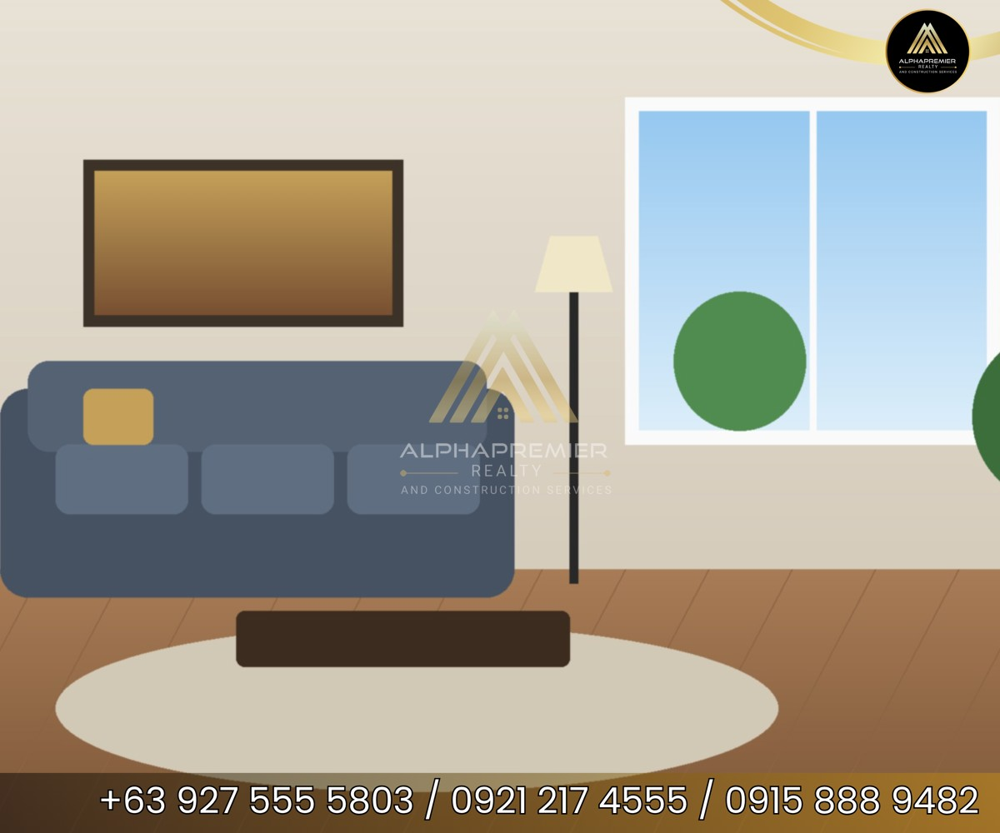
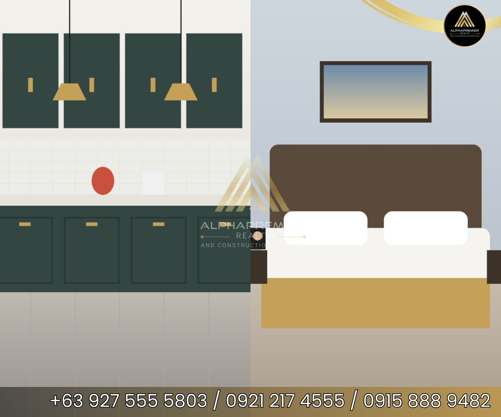
| Button | Result | Best for |
|---|---|---|
| COMBINE IMAGES (default) | Portrait photos are paired in the order you added them. Landscape photos stay single. | Mixed batches with tall room shots |
| KEEP SEPARATE | Every photo is branded on its own, including portraits. Manual pairs and SOLO settings are ignored. | When every photo must appear alone |
The active layout button is shown in gold.
To keep one photo out of pairing while other photos still combine, select SOLO on its card. The button turns gold. Select it again to turn SOLO off.
If automatic pairing puts the wrong photos together, pair them yourself. Use either method:
Paired cards show UNPAIR and a Paired with line naming the partner. Select UNPAIR to remove the pair. Manual pairs are kept when you apply branding and when you rebrand a result.
In a pair, the photo that comes first in the staged list appears on the left half of the frame.
SOLO photos and videos cannot be paired, so PAIR is faded on them. Turn SOLO off first.
The editor lets you choose exactly which part of a photo shows inside the frame. The branding overlay is shown on top, so what you see is what will be exported.
To open it, select EDIT CROP on a staged photo, on a branded result, or in the Preview window.
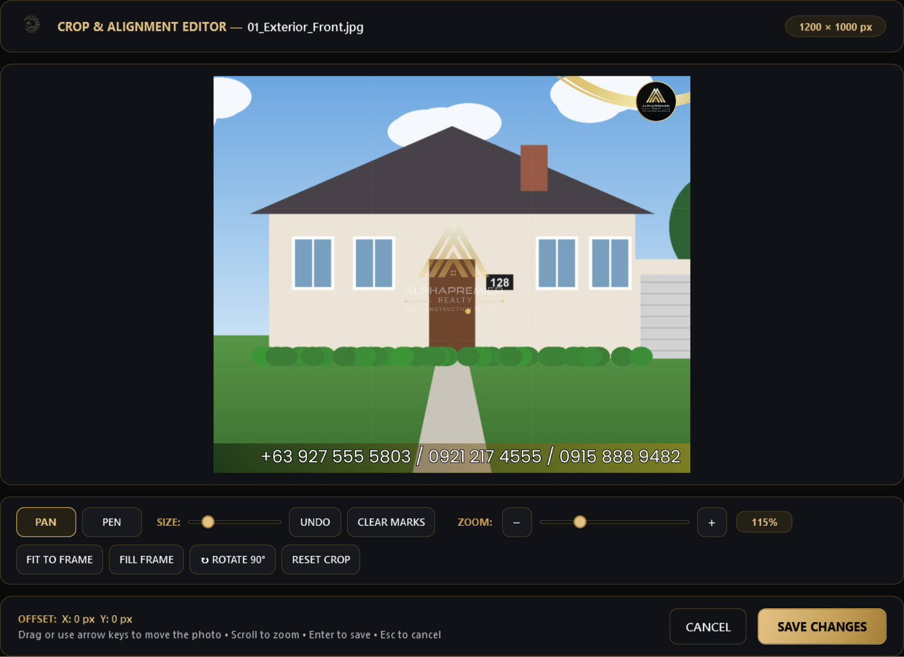
1 2 3 4 5 6 7 8 9 10 11 12| # | Control | What it does |
|---|---|---|
| 1 | Output size | The final size of this image: 1200 × 1000 px, or 600 × 1000 px for each half of a pair. |
| 2 | Canvas | Drag the photo to move it, or click it and use the arrow keys. Scroll the mouse wheel to zoom. Faint guide lines divide the frame into thirds. |
| 3 | PAN | Normal mode (gold when active). Dragging moves the photo. |
| 4 | PEN | Drawing mode for hiding details. See the next section. |
| 5 | SIZE | Pen size for PEN mode. |
| 6 | UNDO / CLEAR MARKS | Remove the last pen mark, or all pen marks on this photo. |
| 7 | ZOOM | − and + change zoom by 10%; the slider covers 20% to 400%. The box shows the current level. |
| 8 | FIT TO FRAME / FILL FRAME | Fit shows the whole photo with no cropping. Fill covers the whole frame and crops the edges evenly. |
| 9 | ROTATE 90° | Turns the photo a quarter turn clockwise. Use it for sideways photos. |
| 10 | RESET CROP | Returns pan, zoom, and rotation to the default. PEN marks are kept. |
| 11 | OFFSET | How far the photo has been moved, in pixels, with a hint for the current mode. |
| 12 | CANCEL / SAVE CHANGES | Cancel (Esc) closes without changes. Save (Enter) keeps your changes. |
When you edit a combined result, the editor shows LEFT PHOTO and RIGHT PHOTO at the top. Select one to adjust it. Each half has its own zoom, position, rotation, and PEN marks.
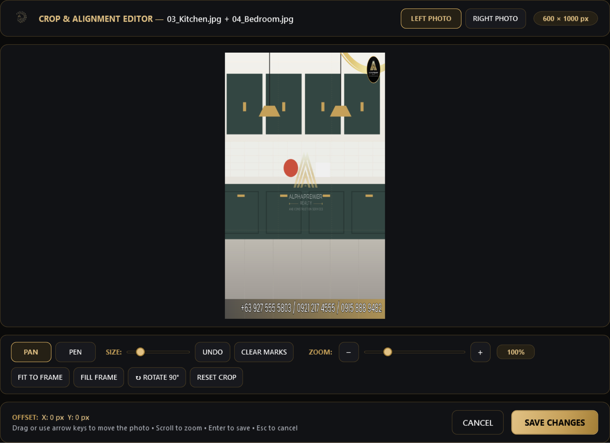
1Use PEN to paint solid marks over things that should not appear in a public listing, such as house numbers, car plates, family photos, mail, or documents. The marks are permanent in the exported image.
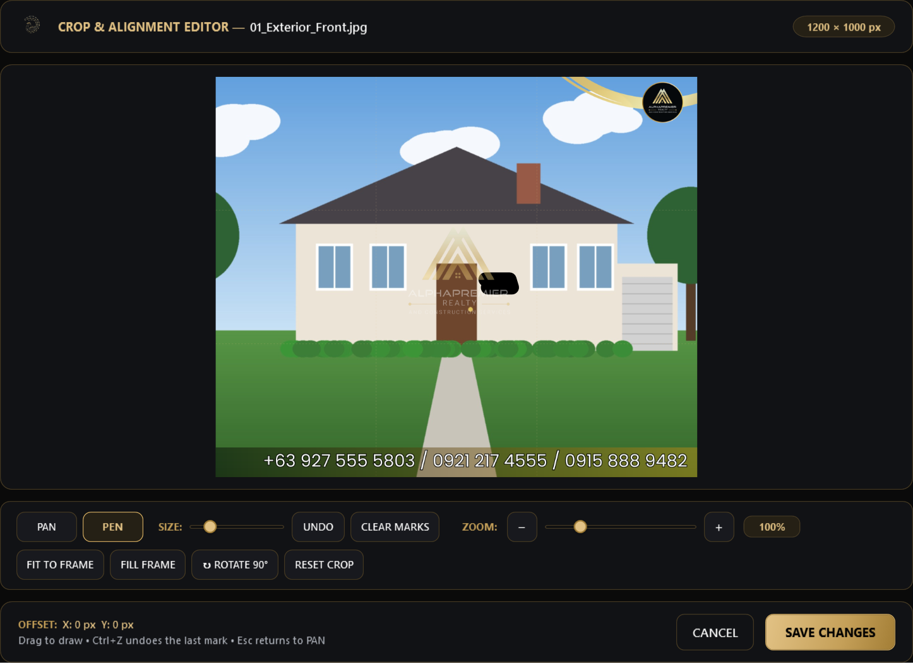
1 2 3 4PEN marks stay attached to the photo. They move, zoom, and rotate with it, and they are kept when you rebrand a result or reset its crop. In a pair, marks belong to the half that was selected when you drew them.
Only UNDO and CLEAR MARKS remove PEN marks; RESET and RESET ALL CROPS keep them. Removing a photo from the selection, or CLEAR ALL, discards its marks. Check sensitive photos again before you export.
In PEN mode, the first press of Esc returns to PAN mode. A second press of Esc closes the editor without saving.
Every output file is named with the prefix, an underscore, and a number. The default prefix is AlphaPremier_Photo.
| Prefix you type | Files created |
|---|---|
Maple_Street_128 | Maple_Street_128_01.jpg, Maple_Street_128_02.jpg, Maple_Street_128_03.mp4 … |
| (left empty) | AlphaPremier_Photo_01.jpg, AlphaPremier_Photo_02.jpg … |
/ \ : * ? " < > |) are removed automatically..jpg and videos as .mp4.<prefix>_Export.zip by default.Use the property address or listing ID as the prefix. Files from different listings will then never be mixed up.
A template is the frame image placed over each photo. Alpha Premier Classic is built in and marked OFFICIAL. It cannot be deleted.
The badge beside the label shows the template’s shape, for example 6:5 (1.20:1) · Official Ratio. The shape of the template is always kept; it is never stretched.
Imported templates are stored on your PC in %LOCALAPPDATA%\Alpha Premier Realty\Branding Studio\Templates and are available every time you open the app.
| Item | Result |
|---|---|
| Landscape photo | Cropped to fill the 1200 × 1000 frame (or framed as you set in the editor), then branded. |
| Portrait pair | Each photo fills one 600 × 1000 half, then the frame is added. |
| SOLO photo | Branded on its own in the full frame. |
| Video | The whole video is fitted and centered in a 1200 × 1000 MP4, and the frame is shown for the full length. Videos are not cropped. |
If one file cannot be processed (for example, it is damaged), the status names that file and the rest of the batch continues.
Selecting APPLY BRANDING again starts a new session and replaces the current results. The app always asks you first, so you can export them (Chapter 12).
| # | Item | What it does |
|---|---|---|
| 1 | BRANDED ASSETS | Number of finished items. |
| 2 | RESET ALL CROPS | Rebrands every result with default pan, zoom, and rotation. PEN marks are kept. |
| 3 | CLEAR ALL | Removes every branded result and the selection, and returns to the start screen. The app first offers to save them as a ZIP file (Chapter 12). |
| 4 | PREVIEW | Opens the result full size. |
| 5 | SAVE | Saves this one result to a location you choose. |
| 6 | EDIT CROP | Opens the editor and rebrands this result when you save. A RESET button appears on results with a custom crop. |
Right after branding, no notice appears beside APPLY BRANDING. A notice appears there only when something changes. After you edit a result, it reads Unsaved edits in current session. If the selected media no longer matches the branded results, it reads, for example, 5 new photo(s) selected — applying branding will start a new session.
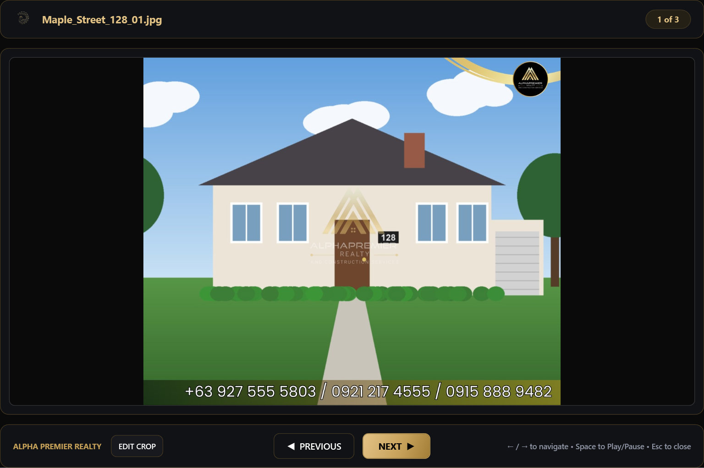
1 2 3 4 5Branded results exist only inside the app until you save or export them. Choose the method that suits how you will share the files.
| Method | How | Result |
|---|---|---|
| Export as ZIP Archive (.zip) | EXPORT › Export as ZIP Archive (.zip), or Ctrl + E (also Ctrl + S) | One ZIP file with every result |
| Export as Individual Files… | EXPORT › Export as Individual Files…, or Ctrl + Shift + E | Every result saved into a folder you choose |
| Save one result | SAVE on a result card | One JPG or MP4 file |
<prefix>_Export.zip; you can change it.Maple_Street_128_01.jpg.Files in the folder with the same names are replaced without asking. Use an empty folder for each listing.
ZIP files are easiest to email or upload in one step. Separate files are easiest to drag into a listing website.
A session is one batch of branded results. Branding Studio protects your results so you do not lose them by accident.
The app asks before it replaces or closes a session that has results, when you:
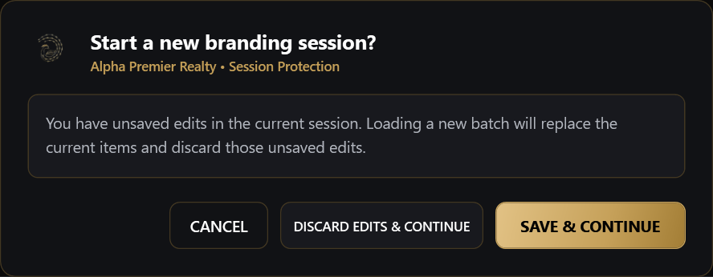
1 2 3| # | Choice | What happens |
|---|---|---|
| 1 | CANCEL | Nothing changes. You return to your current session. |
| 2 | DISCARD EDITS & CONTINUE | The current results are discarded and the app continues. |
| 3 | SAVE & CONTINUE | You save the current results as a ZIP file first, then the app continues. |
Discarded results cannot be recovered. Your original photos and videos are never changed or deleted, so you can brand them again.
Branding Studio checks for a new version:
When a newer version is available, this window appears:
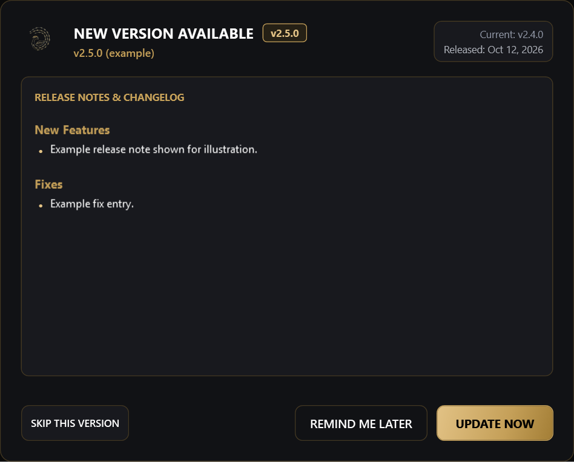
1 2 3 4 5 6| # | Item | What it does |
|---|---|---|
| 1 | New version | The version that is available. |
| 2 | Current / Released | Your current version and the release date of the new one. |
| 3 | Release notes | What is new or fixed. |
| 4 | SKIP THIS VERSION | Stops reminders for this version. You are told again when a newer one comes out. |
| 5 | REMIND ME LATER | Closes the window. You are reminded in about 8 hours. |
| 6 | UPDATE NOW | Downloads the update, checks its digital signature, and starts the installer. The app closes while the update installs. |
Export your results before selecting UPDATE NOW. The app closes to install the update.
If a download fails, the window shows an error and an OPEN IN BROWSER button so you can download the installer manually. If your IT team has turned off updates, the check reports that updates are disabled by system policy.
| Shortcut | Action |
|---|---|
| Ctrl + O | Select media |
| Ctrl + B or F5 | Apply branding |
| Ctrl + E or Ctrl + S | Export as ZIP archive |
| Ctrl + Shift + E | Export as individual files |
| Drag files onto the window | Add media |
| Drag a photo card onto another card | Pair the two photos |
| Shortcut | Action |
|---|---|
| Mouse wheel | Zoom in or out |
| Click and drag (PAN mode) | Move the photo |
| Click and drag (PEN mode) | Draw a mark |
| Arrow keys (photo selected) | Move the photo; hold Shift for bigger steps |
| Ctrl + Z | Undo the last PEN mark, or undo CLEAR MARKS |
| Esc | Leave PEN mode; press again to cancel and close |
| Enter | Save changes |
| Shortcut | Action |
|---|---|
| ← / → | Previous or next result |
| Space | Play or pause a video |
| Esc | Close the preview |
Hover over any button to see a short description of what it does.
| Problem | What to do |
|---|---|
| A file I chose does not appear. | Check that its type is in the supported list (Chapter 5). Files of other types are ignored. Files already in the batch are not added twice. |
| APPLY BRANDING or EXPORT is faded. | Apply needs at least one staged item. Export needs branded results. Both wait while the progress bar is running. |
| The wrong photos were combined. | Drag one photo onto the one it belongs with, or use UNPAIR and PAIR. To stop combining, select KEEP SEPARATE or set photos to SOLO. |
| Important parts are cut off. | Open EDIT CROP and select FIT TO FRAME, or zoom out and move the photo. |
| A photo is sideways. | Open EDIT CROP and select ROTATE 90°. |
| A status message names a file that was skipped. | That file could not be read and may be damaged. Open it in the Windows Photos app; if it does not open there, get a new copy of the file. |
| A HEIC photo shows an error. | The file may be damaged. Export it from your phone again as JPG or HEIC and retry. |
| A video takes a long time. | This is normal for long or high-resolution clips. Wait for the progress bar to finish. |
| “Invalid Template” appears when importing. | Use a PNG, JPG, JFIF, or WEBP image that opens normally. PNG with a transparent center is recommended. |
| The update check says the rate limit was exceeded. | Too many checks were made from your network. Try again later. |
| The update check says updates are disabled. | Your IT team has turned off updates on this PC. Ask them for the latest version. |
| Buttons look cramped on a laptop. | Maximize the window. At high display scaling, button rows wrap and the media area scrolls. |
No. Branding Studio only reads your originals. Branded copies are saved only where you export them.
Only to check for and download updates. Branding, cropping, and exporting work offline.
No. Results are not kept after the app closes. Export your results before closing; the app reminds you if you forget.
Two portrait photos were combined into one frame. Select KEEP SEPARATE if you want one result per photo.
Not from the exported file. While the session is still open, select EDIT CROP on the result, select CLEAR MARKS, save, and export again.
Contact your office IT administrator. Releases and release notes are listed at github.com/Deign86/Alpha_Branding/releases.
| Item | Value |
|---|---|
| Photo output | JPG, 1200 × 1000 pixels (6:5) |
| Each half of a pair | 600 × 1000 pixels |
| Video output | MP4, 1200 × 1000 pixels, original video fitted and centered |
| Zoom range in the editor | 20% to 400% |
| Rotation | 90° steps, clockwise |
| File numbering | 01–99; 001 and up for batches of 100 or more |
| Default prefix | AlphaPremier_Photo |
| Saved templates | %LOCALAPPDATA%\Alpha Premier Realty\Branding Studio\Templates |
| Update checks | At start-up, every 8 hours, and on request |
| Term | Meaning |
|---|---|
| Branding / frame | The Alpha Premier logo, gold accents, and contact strip placed over each photo. |
| Template | The image file that contains the frame. |
| Staged media | Photos and videos you have selected but not yet branded. |
| Result / branded asset | A finished, branded photo or video. |
| Session | One batch of results, from applying branding until you start again or close the app. |
| Combine / pair | Two portrait photos placed side by side in one frame. |
| SOLO | A photo that is always branded on its own, never paired. |
| Portrait / landscape | A photo that is taller than it is wide / wider than it is tall. |
| Pan | Moving the photo inside the frame. |
| Fit / Fill | Show the whole photo / cover the whole frame. |
| PEN (redaction) | Painting solid marks to hide details in a photo. |
| Prefix | The text at the start of every output file name. |